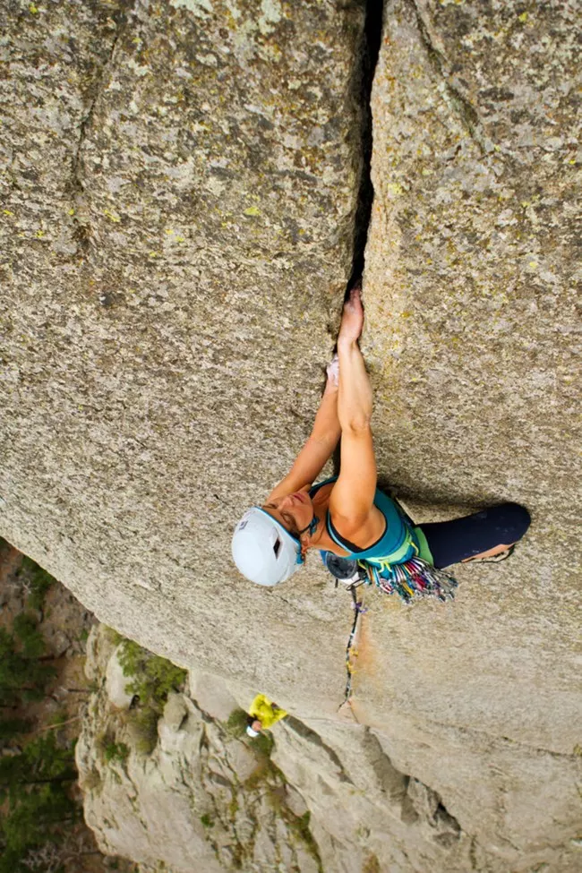
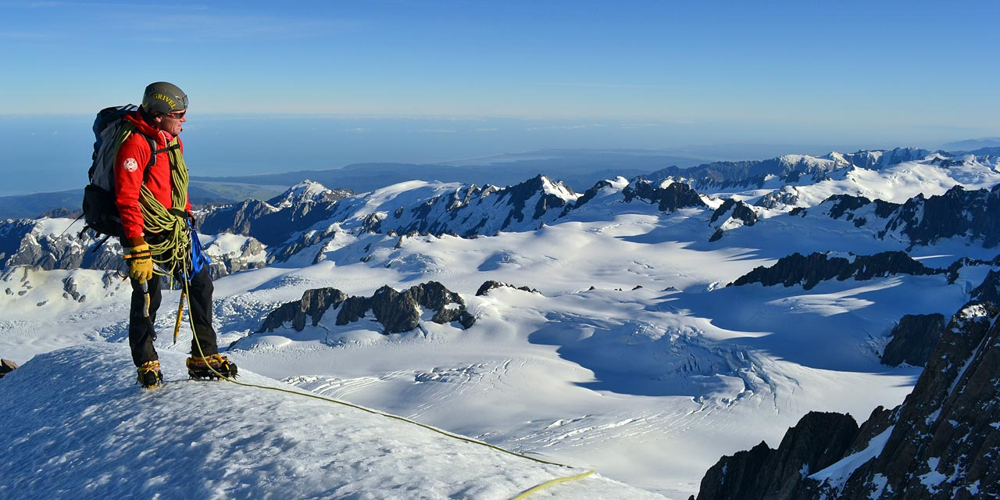
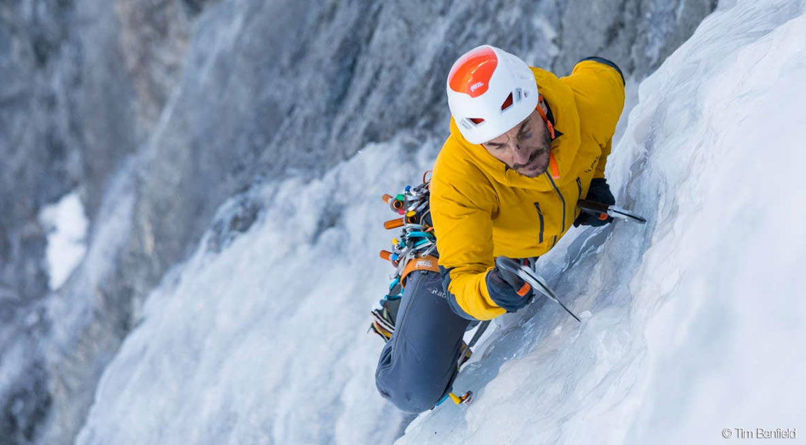

Types of Mountaineering
- Home
- Types of Climbing
Climbing is an exciting and challenging recreational activity. Because of the variety of natural formations around the world, climbing has been separated into several different sub disciplines.
Not every type of climbing is listed below. Parks might have restrictions to the type of activity that is allowed. You can connect to individual parks on our Where to Climb page to check for specific rules and regulations in that Park.
Be aware that climbing can be dangerous. Therefore, knowledge of proper climbing techniques and use of specialized climbing equipment is necessary.



Ice Climbing Ice climbing is when climbers ascend inclined ice formations, such as glaciers and frozen waterfalls. Ice climbing requires the use of specialized equipment that may or may not be needed for other types of climbing.
Mountain Climbing or “Mountaineering” The goal of mountain climbing, or "mountaineering," is to reach high points in mountainous regions. Climbers need to be able to navigate through a wide- variety of conditions as mountains often provide a mix of terrain and conditions, including rock, snow, ice and glaciers.
Rappelling A way for climbers, cavers and canyoneers' to descend their rope(s). The rope is fixed with removable gear or threaded thru fixed anchors.
Sport Climbing Typically a single pitch, one rope length, fixed anchors (bolts) provide protection on the climb.
Traditional Climbing In traditional climbing, or "trad" climbing, climbers carry their own gear which they place into the rock as they go. The lead climber places removable protection along the route and it is removed as the final climber ascends, ensuring minimal damage to the rock.